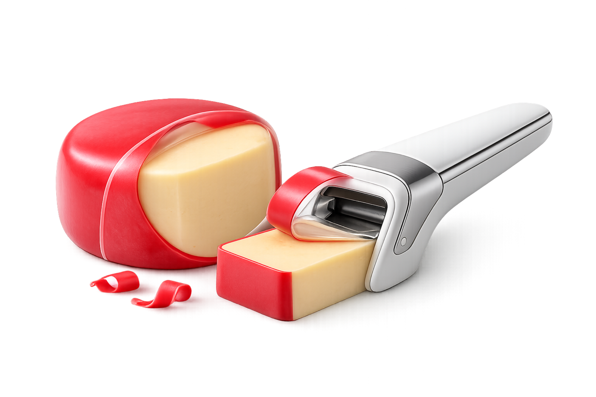
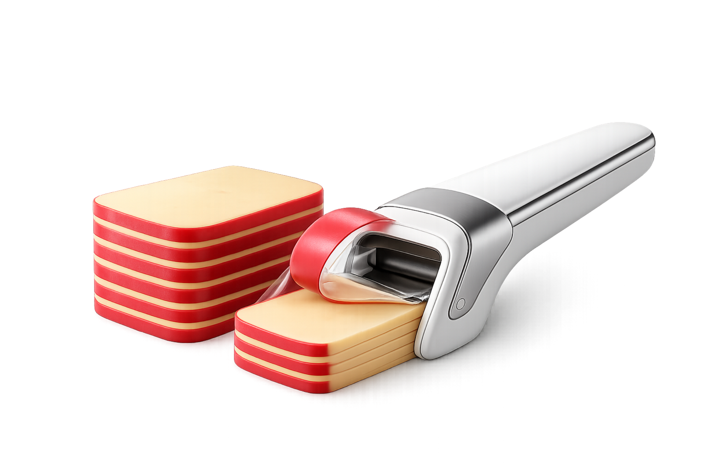

Faster
The outer layer can be engaged and lifted more directly instead of being peeled in an improvised way.
CheezCut is a dedicated concept tool for removing the outer red wax layer around Gouda faster, cleaner, and with more control than relying on hands alone or reaching for a knife. It is not a slicer, not a cheese-cutting device, and not a generic plastic opener.

In real use, the red outer coating around Gouda is often removed by hand. That process can be uneven, a little awkward, and sometimes inefficient enough that people resort to using a knife. CheezCut starts from a simple design belief: a small repeated friction point is still worth solving well.
The outer layer can be engaged and lifted more directly instead of being peeled in an improvised way.
The process is framed as more controlled and more consistent than manual tearing or uneven removal.
It reduces the temptation to use a knife for a task that should not require one.

Reach the edge of the wax layer and create a controlled point of contact.
Raise or catch the outer layer cleanly instead of struggling to start the peel by hand.
Guide the wax away from the cheese body in a more controlled, repeatable motion.